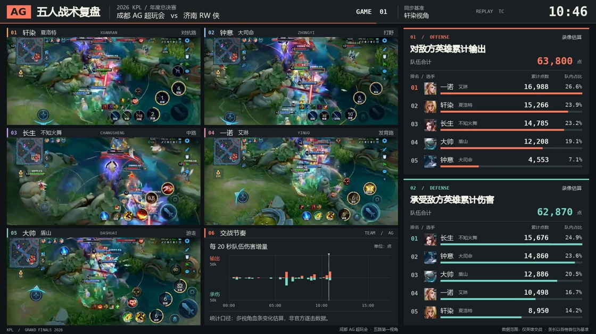
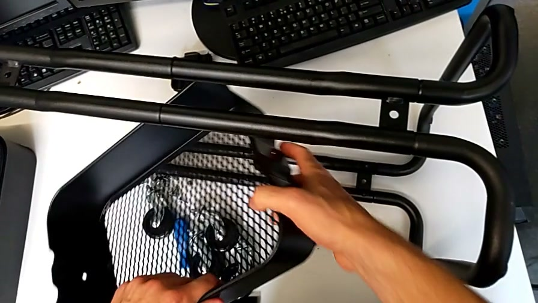
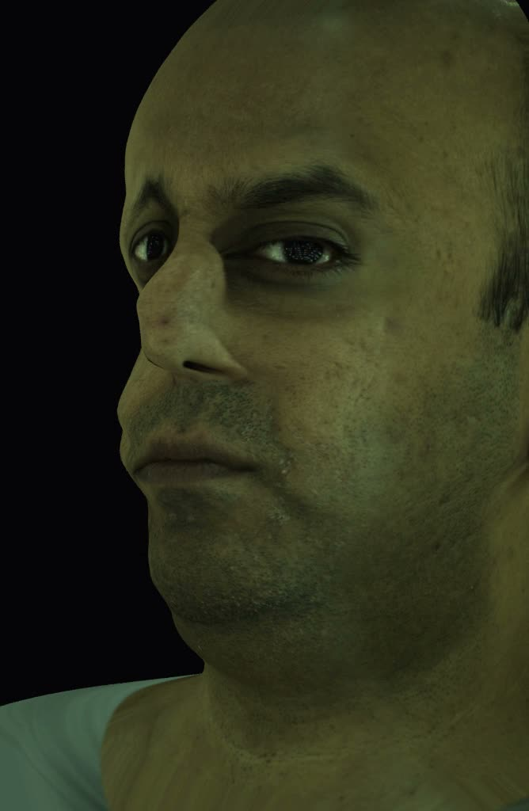
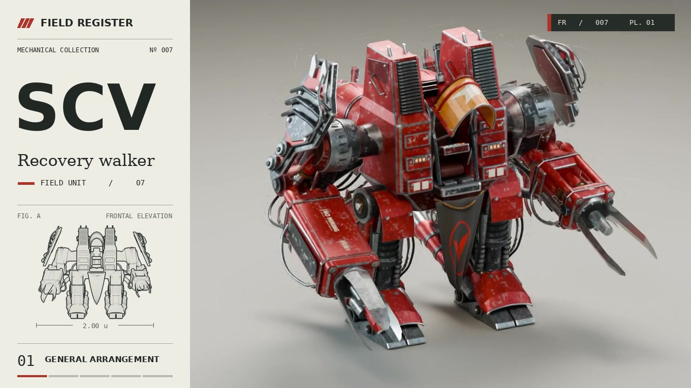

OMNIALE 专业音视频智能体评测
从音视频素材，
到可用的工作成果。
这里记录真实任务、实际交付和核验结果。题目、素材与评分按案例分别说明。
案例目录
05 CASES02 / SAMPLING & ALIASING
教育、训练与学习应用
采样率与混叠
把知识资料做成一段中文教学短片。重点检查概念、动画、旁白和字幕是否说的是同一件事。
Astra · v6.5 · 严格AI复评 85 / 100
查看题目、成片和评分 →
王者荣耀 · 五路第一视角
AG 五人第一视角战术大屏
同步五路 KPL 选手录像，估算对敌方英雄的伤害，并制作随对局更新的输出与承伤双榜。
GPT‑6.2 Astra xhigh + Codex · 31 / 100
查看题目、成片和评分 →
05 / ASSEMBLY MANUAL音视频理解与图解手册制作
从装配现场，到可用手册。
观看18分31秒远程指导录像，回答十个问题，再制作带截图标注的可编辑操作手册。查看真实交付、逐题依据与评分。
GPT-6.2-Sol xhigh 60.88 · DeepSeek v4.1 Flash max 31.25 · 同页查看交付与评分
查看任务、手册和评分 →
06 / DYNAMIC SCENE RECONSTRUCTION多视角视听重建与三维资产制作
从三个机位，到动态三维场景。
根据三个同步视角和原声重建说话场景，在两个目标机位渲染有声视频。查看任务、评分标准、模型交付与失败分析。
Astra 6 58.85 · Astra 6.2 55.45 · Sol 6.2 53.44 · DeepSeek 41.84 / 100 · Codex
查看任务、重建视频和评分 →
07 / SCV ASSET SHOWCASE三维资产重建与有声作品集制作
从六向参考，到机甲展示片。
根据六方向参考图从零重建 SCV 机甲，结合指定配乐和转场音效交付可编辑资产与有声视频。查看题面、评分标准、成片及动态缺陷证据。
Astra 6.2 xhigh + Codex · 37.70 / 100
查看任务、资产和展示片 →分数仅对应本页所列题目、模型和评测条件，不与其他案例直接排名。